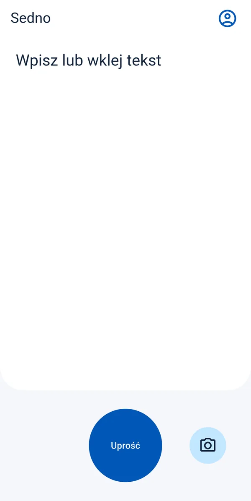
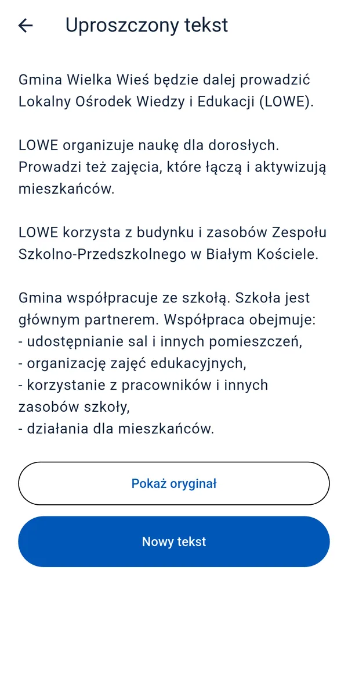

Projekt aplikacji na Androida
Mniej trudnych słów.
Więcej zrozumienia.
Pismo z urzędu, długa wiadomość, skomplikowana instrukcja. Sedno pomaga zrozumieć je prostszym językiem.
Zobacz przykładAplikacja w przygotowaniu.

Tekst oryginalny
W celu dokonania zmiany terminu wizyty prosimy o uprzedni kontakt telefoniczny z rejestracją.
Prościej z Sednem
Chcesz zmienić termin wizyty? Zadzwoń wcześniej do rejestracji.
Łatwiej zrozumieć. Łatwiej działać.
Prosty język jest dla każdego.
Tworzymy Sedno przede wszystkim z myślą o osobach słabosłyszących i osobach, którym trudno zrozumieć złożony tekst. Ale prostsze słowa mogą pomóc każdemu z nas.
Od tekstu do sedna
Trzy proste kroki.
Dodaj tekst
Wpisz go, wklej albo zrób zdjęcie. Na zdjęciu zaznacz fragment i wybierz Uprość.
Sedno upraszcza tekst
Sedno użyje sztucznej inteligencji, by napisać tekst prostszym językiem.
Przeczytaj po swojemu
Przeczytaj wynik i porównaj go z oryginałem. Wszystko w jednym miejscu.


Sztuczna inteligencja może się pomylić. Ważne informacje sprawdź w oryginale.
Twoje teksty. Twoja kontrola.
Prywatność od początku.
Tak projektujemy Sedno: zdjęcia zostają na telefonie, a historia jest przechowywana lokalnie.
Pełna polityka prywatności- Zdjęcie zostaje u Ciebie
- Odczyt tekstu ze zdjęcia odbywa się na urządzeniu. Samo zdjęcie nie jest wysyłane.
- Tekst przetwarza AI
- Tekst do uproszczenia trafia przez serwer do dostawcy AI — OpenAI. Serwer Sedno nie zapisuje jego treści.
- Historia na 7 dni
- Zaszyfrowana historia jest zapisywana tylko na Twoim urządzeniu. Możesz usunąć ją wcześniej. Wylogowanie usuwa historię z telefonu.
Sedno
Żeby słowa były bliżej ludzi.
Pracujemy nad aplikacją na Androida.
Link do pobrania pojawi się tutaj po premierze.